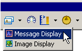

|
|
|
|
|
|
|
|
You can create two types of displays:
Message Display. This tool displays messages, and uses Color and Text resources.
Image Display. This tool displays images and uses Image resources.


For information about resources, see Section 21.1, Setting Up Reusable Resources.
The following table describes each tab in the Message Display Settings or Image Display Settings dialog box with a reference to more information.
|
Tab |
Settings |
Reference |
|
General Tab |
Defines the resources and number of states used in the display. |
Section 14.2.1, General Tab. |
|
Input Mode Tab |
Specifies input functions, such as use of pop-up keypad, hold delay, and touch buzzer. |
Section 14.2.2, Input Mode Tab. |
|
Visibility Tab |
Defines visibility and blink for the display. |
Section 14.2.3, Visibility Tab. |
|
Advanced Tab |
Sets up an interlock to prevent data inputs. |
Section 14.2.4, Advanced Tab. |